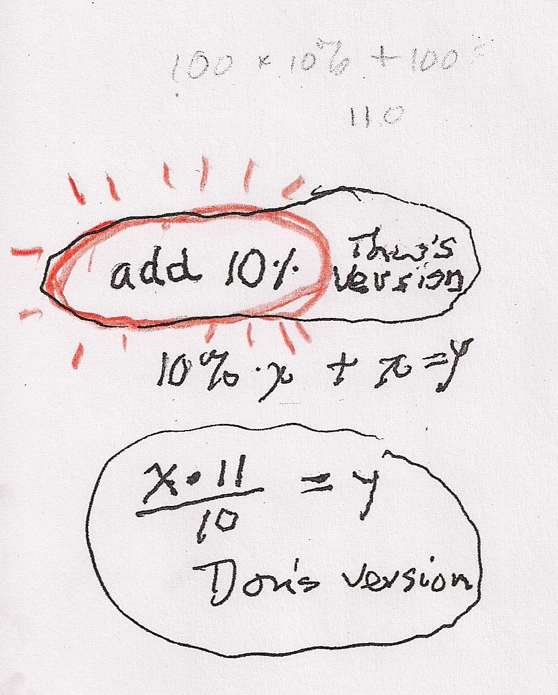
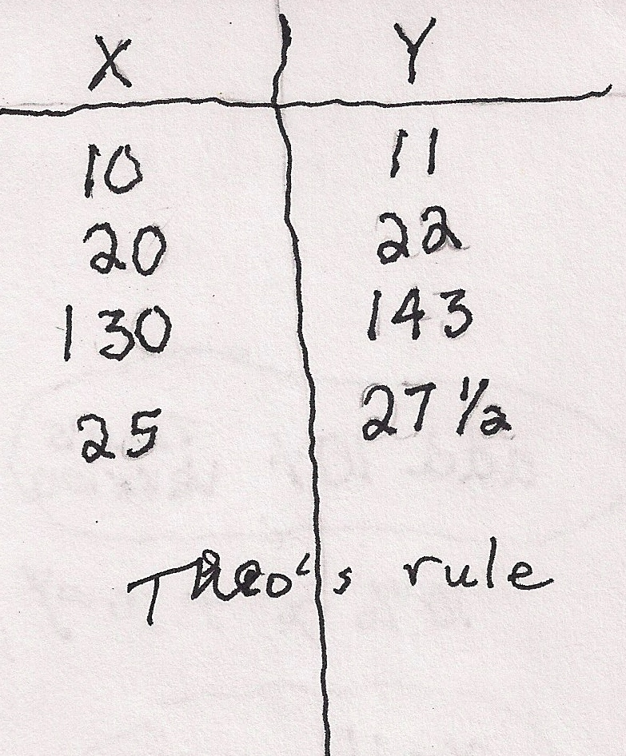

Theo's rule!
Theo simply thought of add 10% and that's what he wrote on the back of the card. Don wrote 10%x + x = y as a way he could write this. And Don knew how to multiply by 11. So for Theo's input of 130, Don thought 130x11= 1430 , and 1430/10 = 143, Theo's output number. So checking the others, Don came up with the rule as x*11/10 = y. Not nearly as exciting as Theo's, but equivalent.
 
This is a fine example of one of Don's pearls: Try to write, solve, do, show, graph, the solution to a problem, in as many ways as you can (you can learn a lot more)!
Fine job Theo!!